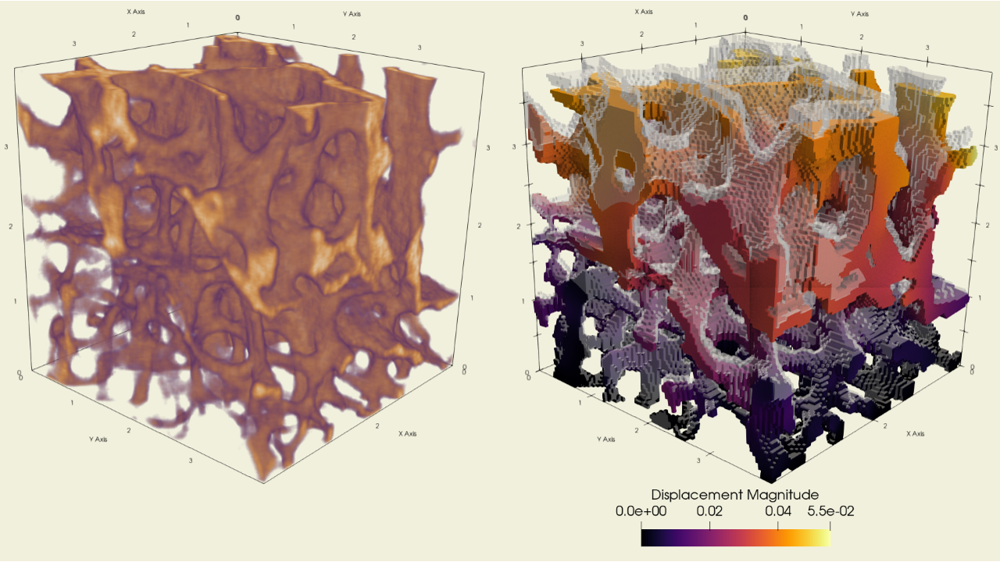
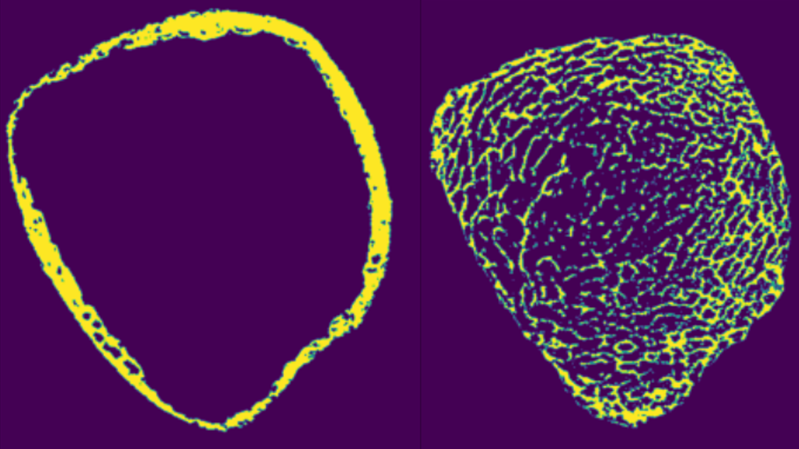
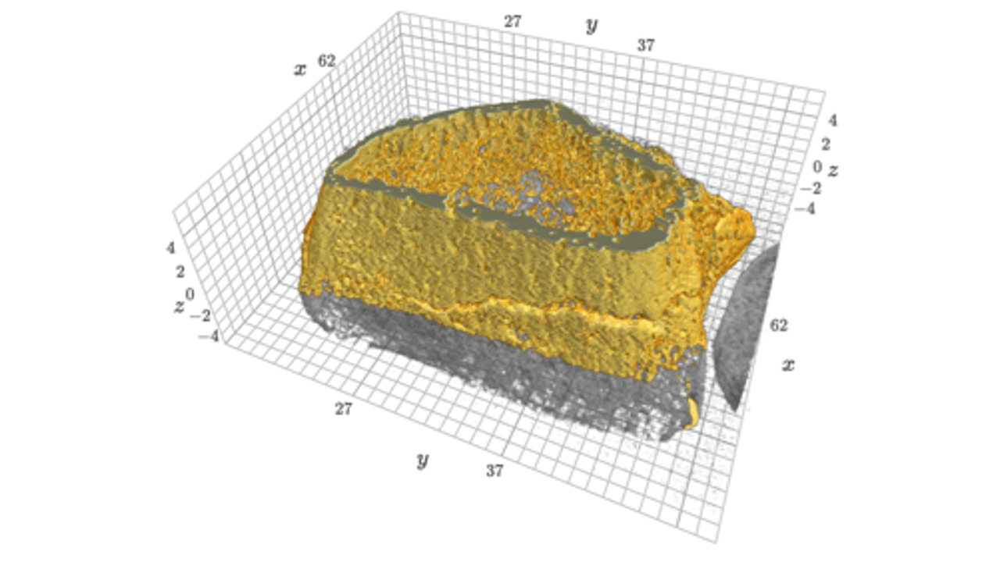
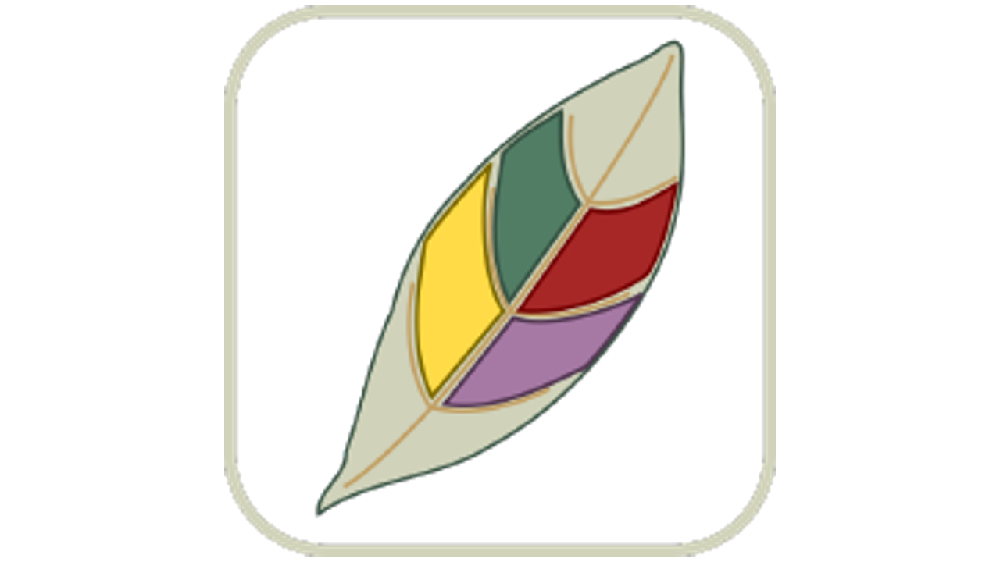
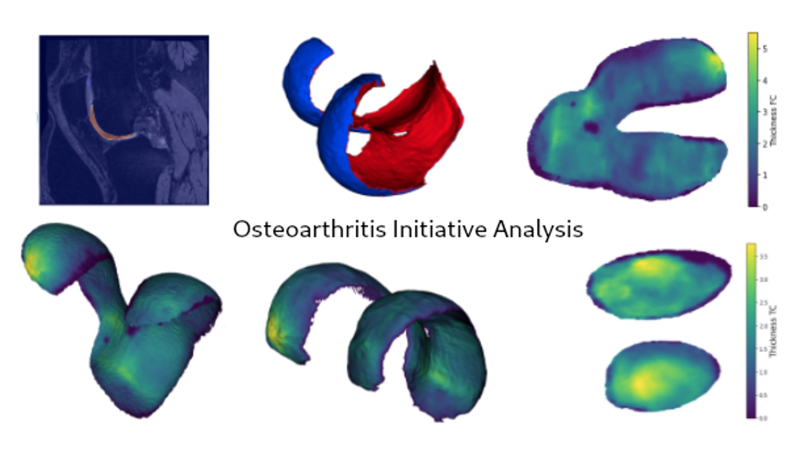
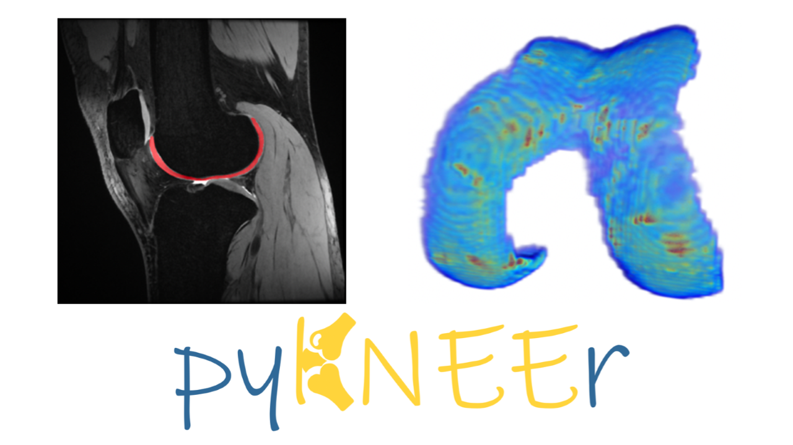
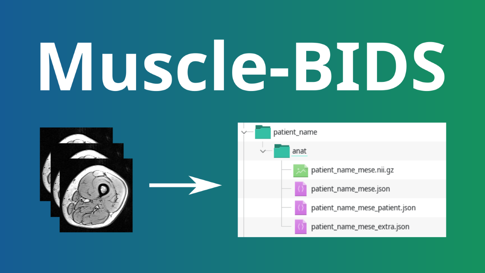
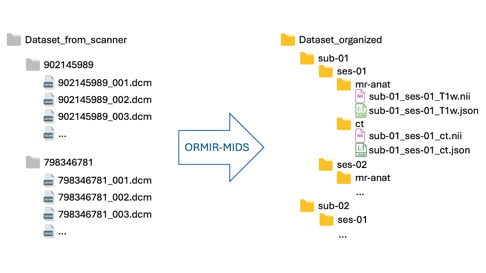

About us
Why a community
Who we are
Working groups
Advisory boards
Code
Software
Templates
Guidelines
Data
Datasets
Policies
I want to join!
More
Publications
Funding
Events
Questions?
Software
Here are Python packages and stand-alone software for
Tissue level analysis
,
Organ level analysis
, and
Data management
created by the ORMIR community
You can also find
other packages and tools
that are available online
Tissue level analysis

Ciclope
Processing of micro computed tomography data to generate finite element models
ITKIOScanco
An ITK module to read and write Scanco microCT .isq files

ORMIR XCT
Segmentation and morphometric analyses of HR-pQCT images

vtkbone
VTK classes for processing Scanco’s AIM file format
Organ level analysis
ALBA
Agile Library for Biomedical Applications

Dafne
Annotating MRI images and training machine learning models

OAI analysis 2
An open source analysis approach for the OsteoArthitis Initiative (OAI) dataset

pyKNEEr
Segment and analyze femoral knee cartilage images
Data management

MUSCLE-BIDS
An open data standard for Muscle MR imaging

ORMIR-MIDS
An open data standard for MSK imaging
More packages
QMRITools
A toolbox for quantitative magnetic resonance imaging
Cannot find your package or software in this page?
Contact us!